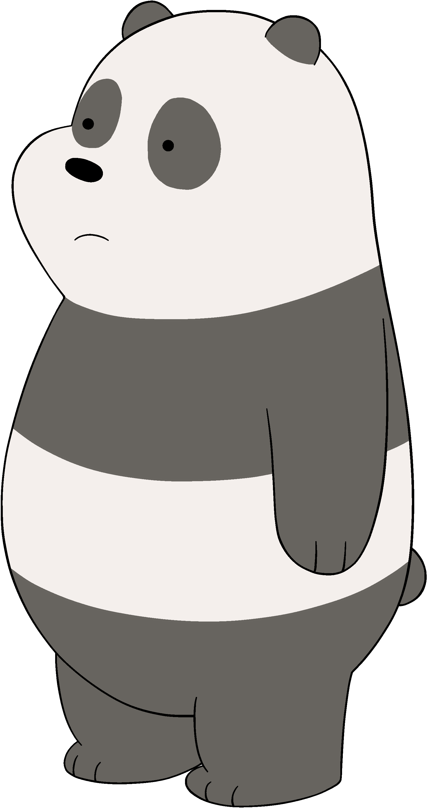

Panda
(biasanya dipanggil "Pan-Pan") (diisi oleh Bobby Moynihan, Duncan Joiner sebagai anak beruang) adalah panda raksasa. Dia adalah saudara tengah dan dijuluki Pan-Pan oleh Grizz. Dia lembut hati dan merasa malu atau cemas dengan mudah. Panda memiliki kepercayaan diri yang jauh lebih sedikit dibanding saudaranya. Dia baik dengan teknologi, dan menggunakan keterampilan itu di media sosial daring dan situs kencan, yang dengannya dia tidak menemukan banyak keberhasilan. Dia juga orang yang "jatuh cinta" paling cepat. Seringkali beberapa kali dia naksir kepada beberapa gadis perempuan. Dia adalah yang paling kreatif dari saudaranya, yang memiliki lagu-lagu yang ditulis di episode "Everyone's Tube", dan tidak diragukan lagi sebagai yang "terlucu" seperti yang ada di episode "Panda's Sneeze". Panda adalah seorang vegetarian dan memiliki alergi parah pada kacang dan kucing. Telah terungkap bahwa Panda menyukai Anime dan menikmati hal-hal lain yang berhubungan dengan budaya Jepang. Dia terlihat memakan Ramen di beberapa episode, dan di episode "Hibernation" dia terlihat sedang makan makanan ringan yang mirip dengan Pocky. Panda juga menghadiri perguruan tinggi komunitas dimana dia mengambil jurusan seni seperti yang terungkap dalam episode "Panda's Art."